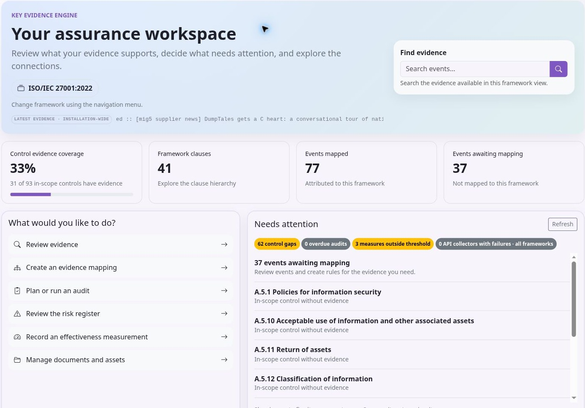

Using KEEN
Your assurance workspace
Chapter 1 of 15
Follow the evidence through KEEN
KEEN connects operational records with framework requirements, risk decisions and audit work. A useful starting point is one question: what activity would demonstrate that a particular control is operating?
- Collect: enable a built-in ingester, receive webhooks, deploy KEEN Agent, create a custom API ingester or record diary evidence.
- Inspect: open a real event and review its source, timestamp, action, outcome and structured fields.
- Map: use Create mapping from this event, keep the conditions that define the evidence you need, then give the mapping a meaningful name and choose its controls.
- Preview: inspect matching and nonmatching examples. Review any control suggestions and apply the rule to the intended events.
- Measure: define effectiveness targets and record observations, including measurements submitted by reporting tools through webhooks.
- Audit: plan an engagement, sample relevant evidence and record questions, responses, findings and conclusions.
- Improve: review unmapped events, evidence gaps, measures outside their thresholds, audit-scope coverage and risk treatments.
For example, a restore-test record can support backup and continuity controls. A recurring measurement can track whether recovery targets are being met. An auditor can sample both records and document what was verified.
Get started
Start with a framework and a scope
Select a framework in the framework switcher before reviewing controls, clauses, evidence coverage or the Statement of Applicability. The selected framework follows supported navigation links and filters. Changing it selects a different view of the same evidence and risk register.
The KEEN Assurance Framework is available as KEEN-AF:1.0. It is based on Vanta’s controls, licensed under the Apache License, Version 2.0 (Copyright 2021 Vanta Inc). KEEN adaptations include control organisation, identifiers and consolidation of duplicates. KEEN itself is also licensed under Apache 2.0. It provides a practical set of assurance controls and works with the reusable risk library. Treat it as a starting point for your organisation’s assurance programme. Certification and audit conclusions require their own assessment process; consult the licensed text when applying an external standard.
Begin by agreeing the organisational scope, assets, responsible people and applicable frameworks. Review each relevant control, record why it is included or excluded, and link the policies, risks and evidence that support your decision. A high evidence count shows linked records. Evaluate their relevance, outcomes and coverage to assess control effectiveness.
A practical first session
- Sign in and select the framework you intend to assess.
- Review the framework’s Controls and Statement of Applicability screens, and Clauses when the framework has them.
- Add your assets and responsible people under ISMS.
- Create an asset-specific risk, either directly or from the reusable library.
- Ask an administrator to configure an evidence definition for one operational source.
- Inspect a collected event, its artefact and its mapped controls.
- Create an audit and sample the evidence with an explanation of what it demonstrates.
Your assurance workspace
The home page follows the framework selected in the navigation menu. Its overview shows in-scope control evidence coverage and event mapping counts; the Clauses card appears when that framework has clauses. Available tasks follow your account’s permissions.
Use Needs attention to review controls without evidence, open audits whose end date has passed, and effectiveness measures whose latest numeric entry is outside its configured threshold. Values are compared only when their units match. Administrators also see enabled API collectors with consecutive failures; those collection checks cover the whole installation. Choose Refresh to update the overview.
Use the task links to review evidence, create mappings, work on audits, review risks or record measurements. The Explore your workspace cards retain the connected view: zoom into a framework section or record, follow its evidence and relationships, then use Zoom out to retrace your path or Home to return to the overview. Evidence coverage measures the presence of linked evidence; assess its relevance and quality during review.
Sign-in, accounts and permissions
Use the sign-in method configured for your installation. Self-managed installations can use local accounts or configured identity providers. Your administrator controls users, groups and permissions. An account can be active without having permission to perform every action.
Open the KEEN address provided by your administrator. Use the sign-in method enabled for your installation, such as a local account or your organisation’s identity provider. Your administrator manages account access and permissions.
An administrator has full application access. A normal user receives explicit permissions, directly or through groups. An inherited role is resolved from group membership. Read permissions and manage permissions are separate. Ask for the specific access needed for your work through your own account.
Typical permission families are events.read; audits.read and audits.manage; risk.read and risk.manage; pestle.read and pestle.manage; interested_parties.read and interested_parties.manage; isms.read and isms.manage. Question and incident creation/deletion have separate permissions. audittrail.read controls access to the administration audit trail.
A useful first session

- Select KEEN Assurance Framework in the framework switcher. Open a control and follow one of its evidence links. Inspect the underlying event, supporting material and recorded outcome.
- Open Risk register. Select a sample risk, compare inherent and residual ratings, and inspect its treatment plan and control links.
- Open KEEN Mitigator and describe a fictional concern, such as “Staff use unapproved AI tools to process customer records.” Review the matching library scenarios and control suggestions.
- Visit ISMS: explore an objective, an asset, an effectiveness measure and meeting minutes. Follow their control and clause relationships.
- Open Documents, create a fictional policy and save a second content version. Inspect its revision history.
- Create a small internal audit with a few controls and one document in scope. Sample an event, record a finding and review the report before completing the audit.
Your demo contains example frameworks, evidence, risks and ISMS records. Use fictional information as you explore, and check the expiry shown in KEEN when planning your session.